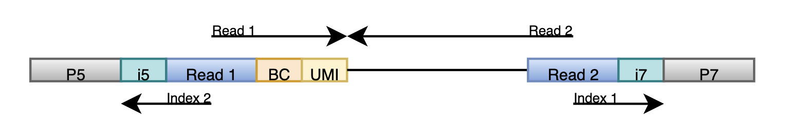

seqspec Tutorial: 10X Chromium Next GEM Single Cell 3’ v3.1 Dual-Indexed Library
To download a template seqspec, click here, and then follow this tutorial to tailor the seqspec to your dataset.
Summmary of Library Structure and Sequencing

Above is a diagram of the 10X Chromium Single Cell 3’ Dual-Indexed v3 Library. The library is structured as follows from 5’ to 3’:
| Sequence | Type | Length |
|---|---|---|
| Illumina P5 Primer | Fixed | 29 bp |
| Illumina i5 Index | Fixed | 10 bp |
| Truseq Read 1 | Fixed | 29 bp |
| Cell Barcode | Random | 16 bp |
| UMI | Random | 12 bp |
| cDNA | Random | Variable |
| Truseq Read 2 | Fixed | 34 bp |
| Illumina i7 Index | Fixed | 10 bp |
| Illumina P7 Primer | Fixed | 24 bp |
10x Genomics recommends that the libary be sequenced in the following way:
| Name | Primer | Cycles | Strand | Coverage |
|---|---|---|---|---|
| Read 1 | Truseq Read 1 | 28 | positive | Cell Barcode + UMI |
| Index 1 | Truseq Read 2 | 10 | positive | Illumina i7 Index |
| Index 2 | Truseq Read 1 | 10 | negative | Illumina i5 Index |
| Read 2 | Truseq Read 2 | 90 | negative | cDNA |
Step 1: Fill in the Assay Info
Fill in the missing assay info according to the technology you used to sequence your library and the library kit that you used. For instance, if you used the Chromium Next GEM Chip G Single Cell Kit, 48 rxns PN-1000120 reagent kit to construct your library and then the Illumina NextSeq 2000 sequencer with the P3 reagent kit, your assay info section would look like:
!Assay
seqspec_version: 0.3.0
assay_id: 10x-RNA-v3.1-dual-index
name: Dual Indexed 10x Genomics Chromium Single Cell 3' v3.1
doi: https://cdn.10xgenomics.com/image/upload/v1722285481/support-documents/CG000315_ChromiumNextGEMSingleCell3__GeneExpression_v3.1_DualIndex__RevF.pdf
date: 2024-07-29
description: 10x Genomics Chromium Single Cell 3' v3.1 using dual Illumina multiplex index
modalities: rna
lib_struct: https://teichlab.github.io/scg_lib_structs/methods_html/10xChromium3.html
sequence_protocol: Illumina NextSeq 2000
sequence_kit: Illumina NextSeq 2000 P3 XLEAP-SBS Reagent kit
library_protocol: Single-Cell RNA Sequencing Assay (OBI:0002631)
library_kit: Chromium Next GEM Chip G Single Cell Kit, 48 rxns PN-1000120Step 2: Alter the Sequence Spec
Update the Read Objects
10x Genomics recommends that you sequence Read 2 to at least 90 nucleotides, but you may have decided to sequence to up to 150 nucleotides. If that is the case, you can modify the length of Read 2 by changing the min_len and max_len to reflect the read length. For example, if you want to sequence 150 nucleotides, update the read as follows:
- !Read
read_id: read_2
name: Read 2
modality: rna
primer_id: truseq_read2
min_len: 150
max_len: 150
strand: neg
files:
- !File
...You may have also decided not to sequence the sample indices if you did not sequence multiple samples at once. In this case, you should remove the Index 1 and Index 2 read objects.
Add in the file objects
Next, for each read, you should fill out a file object referencing the corresponding file.
A file object in seqspec if formatted as follows:
- !File
file_id:
filename:
filetype:
filesize:
url:
urltype:
md5: file_id, filetype, filename — identifies and describes the file
filesize - the size of the file
url - (optional) the link to the file
urltype - (optional) the type of url
md5 - (optional) MD5 fingerprint of data
An MD5 checksum is a short, unique string of letters and numbers generated from a file’s contents. It acts like a digital fingerprint — if even a single byte in the file changes, the checksum will be different.
Including the MD5 value for your files allows others to verify data integrity after download or transfer, ensuring that the file has not been corrupted or altered.
To generate an MD5 checksum string, type into your command-line:
md5sum <filename> # For Linux
md5 <filename> # For macOS
Get-FileHash -Algorithm MD5 -Path <filename> # For WindowsStep 3: Alter the Library Spec
You can modify the min_len and max_len values for the cDNA region to reflect your desired read length. For example, if you want to sequence 150 nucleotides of cDNA, update the region as follows:
- !Region
parent_id: rna
region_id: cdna
region_type: cdna
name: cDNA
sequence_type: random
sequence: XXXXXXXXXXXXXXXXXXXXXXXXXXXXXXXXXXXXXXXXXXXXXXXXXXXXXXXXXXXXXXXXXXXXXXXXXXXXXXXXXXXXXXXXXXXXXXXXXXXXXXXXXXXXXXXXXXXXXXXXXXXXXXXXXXXXXXXXXXXXXXXXXXXXXXXXXXXXXXXXXXXXXXXXXXXXXX
min_len: 150
max_len: 150
onlist: null
regions: nullAdjust the number of X characters in the sequence field to match the new length, and then adjust the full library sequence and length accordingly.
library_spec:
- !Region
region_id: rna
region_type: named
name: rna
sequence_type: joined
sequence: AATGATACGGCGACCACCGAGATCTACACNNNNNNNNNNTCTTTCCCTACACGACGCTCTTCCGATCTNNNNNNNNNNNNNNNNNNNNNNNNNNNNXXXXXXXXXXXXXXXXXXXXXXXXXXXXXXXXXXXXXXXXXXXXXXXXXXXXXXXXXXXXXXXXXXXXXXXXXXXXXXXXXXXXXXXXXXXXXXXXXXXXXXXXXXXXXXXXXXXXXXXXXXXXXXXXXXXXXXXXXXXXXXXXXXXXXXXXXXXXXXXXXXXXXXXXXXXXXXGATCGGAAGAGCACACGTCTGAACTCCAGTCACNNNNNNNNNNATCTCGTATGCCGTCTTCTGCTTG
min_len: 314
max_len: 314
onlist: null
parent_id: null
regions:
- !Region
...Now you have a complete seqspec file for your data. All that’s left is to save it with your dataset!